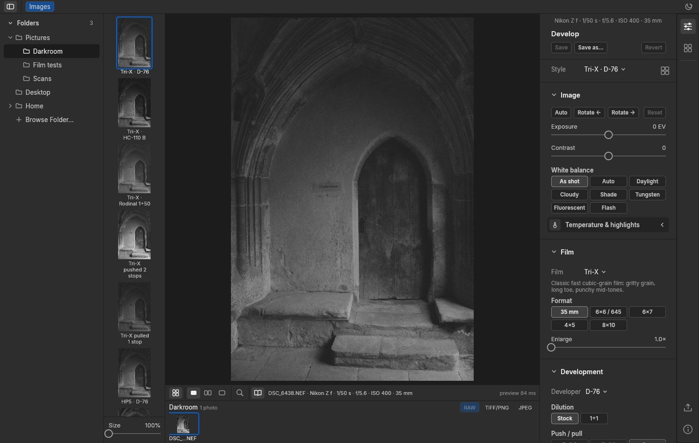
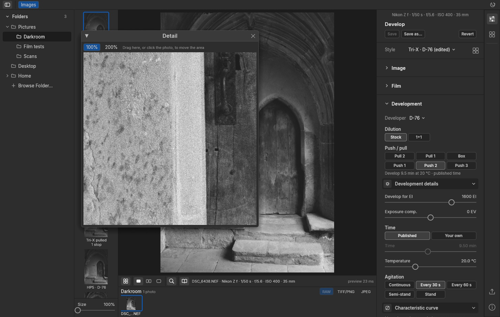
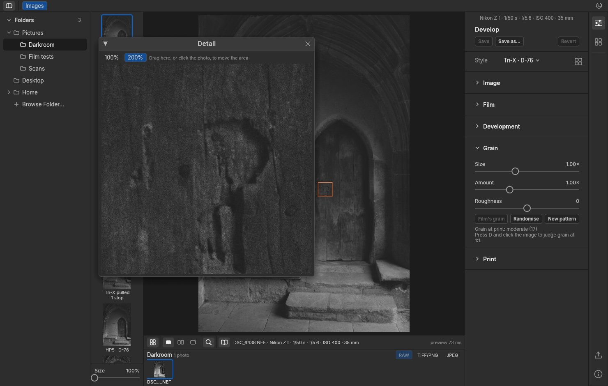
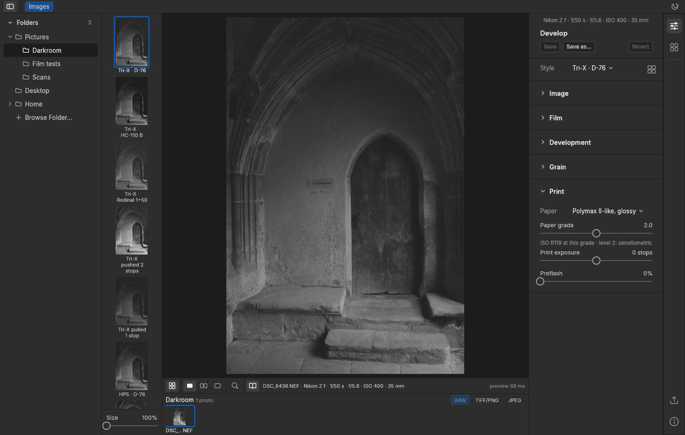
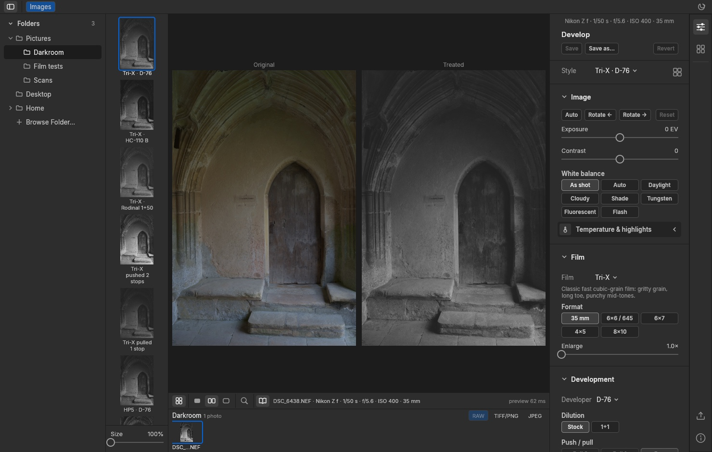
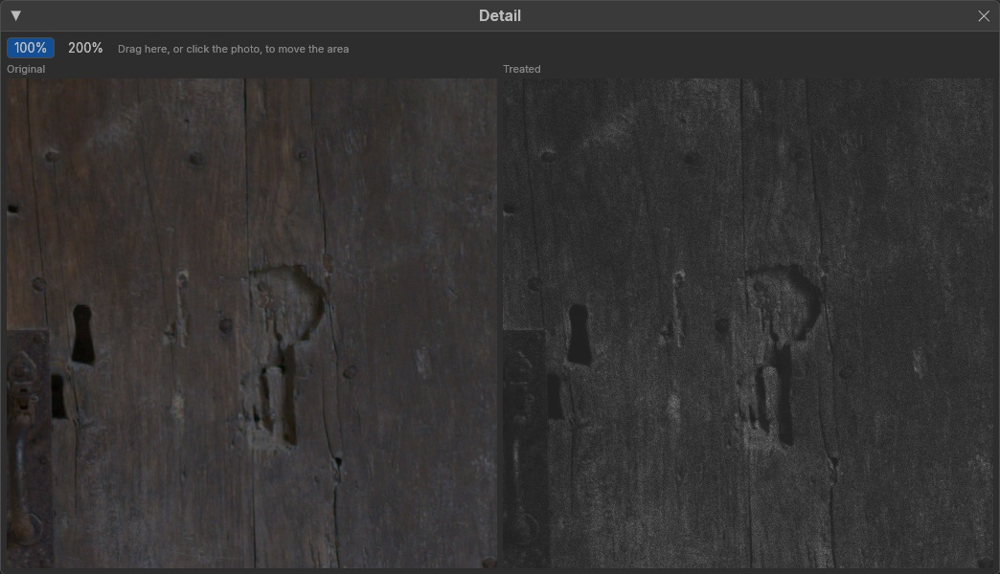
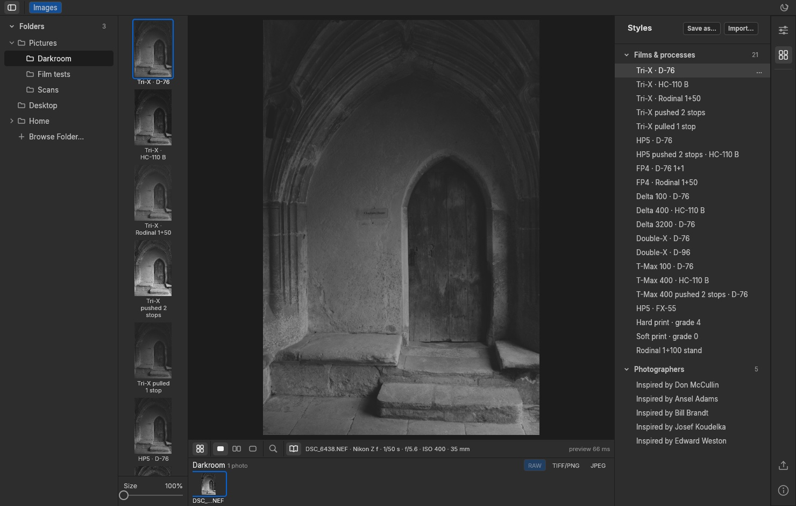
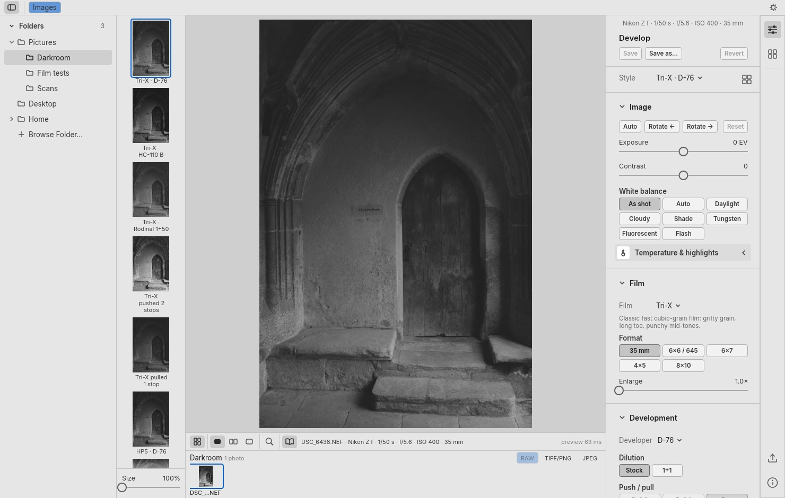

BW Darkroom · open source · macOS
Developing film in software
A black-and-white editor that models the film, the developer and the paper as separate stages, and takes its numbers from the manufacturers' datasheets.
Most black-and-white conversions start and finish with a tone curve. You pick a preset named after a film, and you get a curve somebody liked plus some noise. That gives you a look. It doesn't tell you what would have happened if you'd shot Tri-X, developed it two stops long in HC-110 and printed it on a hard grade.
BW Darkroom is my attempt to answer that question. It's a macOS app, written in Rust, that takes a raw file through the same chain a darkroom would. The film is exposed, the developer builds density over time, and the negative is enlarged onto paper. Each stage is a separate model with its own controls, and wherever I can, the numbers come from the people who made the materials.

What it is
- A desktop app for Apple silicon Macs, free and open source (Apache-2.0).
- It opens raw files from most cameras, plus TIFF, PNG and JPEG.
- It exports 16-bit TIFF or PNG, or JPEG. A small recipe file can be saved next to each export so you can see later exactly how it was made.
- Your photos never leave your machine. Every render happens locally; the only network access is the update check.
Film, developer, paper: three stages, not one curve
In a real darkroom you make three separate decisions: which film to load, how to develop it and what to print it on. Each one changes the picture in its own way. BW Darkroom keeps them apart.
Film. You choose a stock (Tri-X, HP5 Plus, T-Max, the Delta range, FP4 Plus, Double-X, Kentmere) and a format, from 35 mm to 8×10. Format matters because a small negative is enlarged more, so its grain shows more in the print.
Development. You choose the developer and dilution, then push or pull. The time comes from a published table (the Massive Dev Chart), or you can enter your own. Temperature and agitation are settings too, from continuous agitation through to stand development. Dilute developers and stand development produce edge effects, and the model includes those.
Print. You choose the paper, the grade, the print exposure and, new in this version, preflash.
Starting from the datasheet
Earlier versions used illustrative film parameters: sensible-looking curves, clearly labelled as such. That was never the goal. Kodak and Ilford publish characteristic curves for their films, plotting density against exposure for several development times. Those curves are the best data there is, and the app now uses them.
Reading the curves exactly. Kodak's datasheets are PDFs, and their curves are drawn as vector paths. Instead of tracing a picture by eye, I read the exact coordinates the plot was drawn with. I then checked every extraction by drawing it back over the original page.
Fitting a development model. A film's curve isn't fixed. As development goes on, density builds towards a limit, the curve gets steeper, and the toe moves: the film gains some real shadow speed. The model fits all the published development times at once. For Tri-X in D-76, Kodak's four curves (6 to 12 minutes) fit with an average error under 0.03 density. T-Max 400 comes out at a measured speed of ISO 391 against its box speed of 400. Neither check was used in the fit.
Other developers. Kodak also publishes contrast-index charts for HC-110 and diluted D-76. From those I fitted how much faster or slower each developer works than D-76. I then checked the result against Kodak's own time tables, which weren't used: for Tri-X in HC-110 dilution B the fit says 1.75× as fast and the tables imply 1.80×.
Ilford. Ilford publishes less: one curve per film, on a relative exposure scale, and mostly as pictures rather than vector drawings. I wrote a tracer for those and checked each trace against the page. Delta 3200 has a full family of curves, so it gets its own fit. HP5 Plus, FP4 Plus, Delta 100 and Delta 400 keep Ilford's curve shape and borrow how contrast grows from the closest Kodak film. They are then placed so the film reaches its rated ISO. As a check, the time at which each film reaches standard contrast lands within about a minute of Ilford's recommended time.
| Level | What it means | Films |
|---|---|---|
| 2 · fitted | Fitted to the manufacturer's full family of curves | Tri-X, T-Max 100 and T-Max 400 in D-76; HC-110 B and D-76 1+1 rates for Tri-X and T-Max 400 |
| 1 · approximation | One published curve, with growth borrowed from a fitted film | HP5 Plus, FP4 Plus, Delta 100, Delta 400; Delta 3200 from its own family |
| Illustrative | No published curves to fit | Kentmere, Double-X and the remaining developers |
Pushing film
Press Push 2 on Tri-X and the app picks the published time for EI 1600: 9.5 minutes in D-76 instead of 6.75. Push and pull change development only. The exposure stays as you shot it, so to simulate actually underexposing the film, set exposure compensation to −2 EV as well.
Development moves the whole curve, not just its slope. In Kodak's data a two-stop push gains about one stop of real shadow speed, and contrast climbs.
The print has to follow. A darkroom printer exposes a pushed negative for its shadows, so the app does the same: the darkest tone with detail (zone I) prints at the density it would get from normal development. The pushed print keeps its shadows, while mid-tones and highlights brighten and harden.

Grain
Grain strength comes from each film's published granularity, then scales with the format and the enlargement. You can adjust size, amount and roughness; by default they follow the film.
Grain is tied to the pixel's position in the full frame. A 100% crop in the detail window therefore shows exactly the grain you'll get in the export, not a preview approximation.

The paper
The paper is measured too. Kodak published full curve families for its variable-contrast papers, and two of them are built in:
- Polymax II-like, glossy: grades −1 to 5+, with blacks around 2.1.
- Polycontrast IV-like, matte: Kodak publishes filters 1, 3 and 5+. Blacks are around 1.7, flatter and softer.
Grades between the published filters are blended. The panel shows the paper's ISO range at the chosen grade (R119 at grade 2 on the glossy paper), as a printer would read it off the box. Both papers are discontinued, so they're named "-like": emulations built from Kodak's published data.
Preflash is a brief, even exposure given to the paper before the image. It lifts the lightest highlights the most (at 100%, from 0.08 to 0.28 density), darkens mid-tones a little and leaves the shadows alone. It's a classic way to hold detail in bright highlights without flattening the rest of the print.

Seeing what changed
A toolbar under the image switches between the treated image, the original, and the two side by side. A magnifier opens a detail window at 100% or 200%, and in side-by-side mode it shows the original and the treated crop next to each other. A book icon shows the file name and camera settings.


Styles
A style is a complete recipe: film, developer, process, print and grain. The app comes with 21 film-and-process styles (Tri-X in D-76, HC-110 and Rodinal; HP5 pushed in HC-110; Delta 3200; hard and soft prints; Rodinal stand) and five styles inspired by photographers: Don McCullin, Ansel Adams, Bill Brandt, Josef Koudelka and Edward Weston. Those five are documented interpretations of published accounts of how they worked, not claims about their actual recipes.
Every style renders a preview of the current image in a column next to the folders, so you can choose by looking. You can save your own styles and import other people's.

Browsing
The left side works like a familiar photo library: a collapsible folder tree, then a strip of the images in the current folder. Application bundles and other packages are skipped, and portrait images are shown the right way up from their EXIF orientation. The app follows the system light or dark theme, or you can set it yourself.

What it doesn't do yet
- A "digital look". Some people want a black-and-white image that uses the screen's full range, not paper's. That would be a separate, deliberately non-physical output. It's planned but not scheduled, because the film, chemistry and paper models come first.
- Split-grade printing. That would need data on how each layer of the paper responds to each filter, and the datasheets don't give it.
- Every film. Kentmere and Double-X publish no curves, so they stay illustrative.
- Other platforms. It's macOS on Apple silicon only for now.
Everything here comes from published curves. It's an emulation of the datasheet, not a measurement of a particular roll in a particular tank.
How it's built
The engine is a set of Rust crates: exposure and development, the negative (adjacency and grain), printing, and the styles, with raw decoding from LightCraft's open-source decoder. The interface is built with egui. A handful of Python tools read the datasheet curves, fit the models and check the results. Kodak's and Ilford's data stays theirs and is credited in the repository.
Try it
BW Darkroom is on GitHub at github.com/catskinroyale/bnw-darkroom. The Releases page has a disk image for Apple silicon Macs. Issues and ideas are welcome there, especially from anyone with real sensitometry data for the films that are still illustrative.